LRTA 1000 class
LRT-1 1st generation train
The LRTA 1000 class is the first-generation class of high-floor light rail vehicles (LRV) of the Manila LRT Line 1. Purchased under soft loans from the Belgian Government, the trains first entered service under the Light Rail Transit Authority (LRTA) in 1984.
It has undergone two refurbishments; the first from 1999 to 2008, and the most recent by the Light Rail Manila Corporation (LRMC) from 2016 to 2017. The newer 13000 class trains have gradually replaced the older 1000 class trains since July 2023.
It has undergone two refurbishments; the first from 1999 to 2008, and the most recent by the Light Rail Manila Corporation (LRMC) from 2016 to 2017. The newer 13000 class trains have gradually replaced the older 1000 class trains since July 2023.
| LRTA 1000 class | |
|---|---|
|
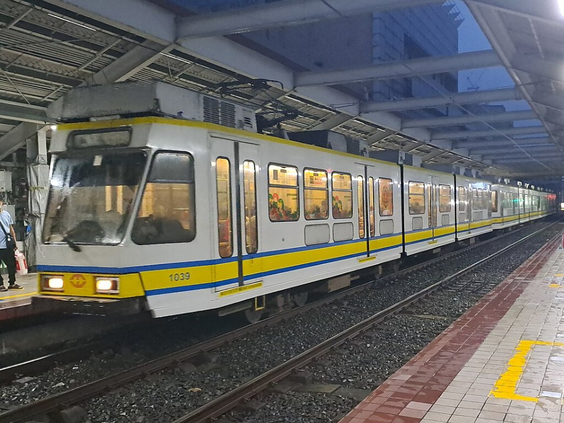
A 1000 class train at Carriedo station in 2023
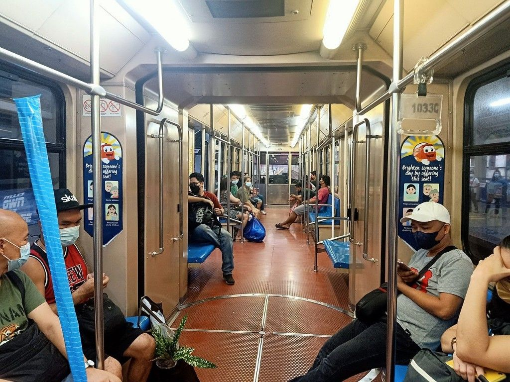
Interior of 1000 class in March 2022
|
|
| Stock type | Light rail vehicle |
| In service | 1984–2025 |
| Manufacturer |
BN Constructions Ferroviaires et Métalliques[note 1]
Ateliers de Constructions Electriques de Charleroi[note 2] |
| Assembled at | Bruges, Belgium |
| Constructed | 1982–1983 |
| Entered service | December 1, 1984 |
| Refurbished | 1999–2001
2003–2008 2016–2017 |
| Scrapped | 2000 |
| Number built | 64 vehicles (32 sets, initially 2-car sets) |
| Number in service | None |
| Number scrapped or decommissioned | 38 vehicles |
| Successor | 13000 class |
| Formation | 2–3 cars per trainset |
| Fleet numbers | 1001–1064 |
| Capacity |
374 per car
748–1,122 passengers (162–243 seats) |
| Operator(s) |
|
| Depot(s) | Baclaran |
| Line(s) served | LRT Line 1 |
| Specifications | |
| Car body construction | BI sheet/copper-clad steel |
| Train length |
2-car: 59.59 m
3-car: 89.37 m |
| Car length | 29.79 m[note 3] |
| Width | 2.5 m |
| Height | As built: 3.272 m Refurbished: 3.525 m |
| Floor height | 900 mm |
| Platform height | 690 mm |
| Entry | Step |
| Doors | Double-leaf 1.3 m plug-type; 5 per side[note 4] |
| Articulated sections | 3 per PRV |
| Wheel diameter | 660 mm (new) |
| Wheelbase |
Per bogie:
1.9 m (motor bogies) 1.8 m (trailer bogies) Bogie centers: 6.75 m on cab ends 7.5 m between trailer bogies Total (end-to-end): 21 m |
| Maximum speed |
Design: 80 km/h
Service: 60 km/h |
| Weight |
Unrefurbished: 41 t
Refurbished: 46 t |
| Axie load | 9 t |
| Steep gradient | 4% |
| Traction system | ACEC thyristor chopper |
| Traction motors | 2 × 217.7 kW DC series-wound motor |
| Power output |
Per LRV: 435.4 kW
2-car trainset: 870.8 kW 3-car trainset: 1.31 MW |
| Transmission | Right-angle link drive |
| Acceleration | 1.0 m/s² |
| Deceleration |
Service: 1.3 m/s²
Emergency: 2.08 m/s² |
| Auxiliaries | Static converter |
| HVAC |
Forced ventilation; 12 units per LRV (1984–2008)
Roof-mounted duct-type air conditioning; 5 units per LRV (2004–present) |
| Electric system(s) | 750 V DC overhead catenary |
| Current collector(s) | Schunk single-arm pantograph |
| UIC classification | Bo′+2′+2′+Bo′ |
| Wheels driven | 8 out of 16 per LRV |
| Bogies | Inside-frame type |
| Minimum turning radius | 25 m |
| Breaking system(s) |
WABCO electro-pneumatic, regenerative, and rheostatic
Bogie-mounted disc and track brakes |
| Safety system(s) |
|
| Coupling system(s) | Semi-permanent |
| Multiple working | Within type |
| Seating | Longitudinal |
| Track gauge |
1,435 mm
Standard track gauge |
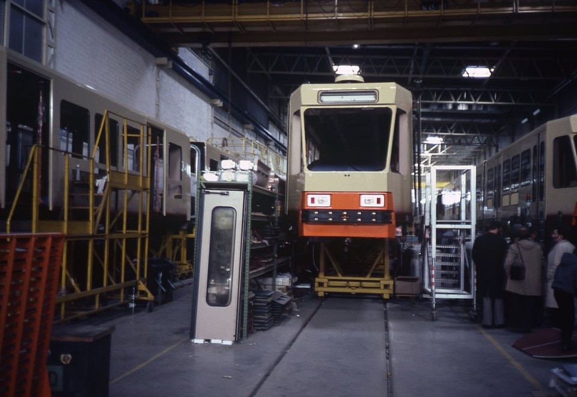
LRTA 1000 class LRVs under construction in the BN plant in Bruges, Belgium
Purchase
The construction of the original 15-kilometer section of the LRT Line 1 was funded by a ₱300 million soft and interest-free loan from the Belgian Government. Additional funding for the project was later sourced from a ₱700 million loan provided by the consortium of ACEC (Ateliers de Constructions Electriques de Charleroi), BN (Constructions Ferroviaires et Metalliques, formerly Brugeoise et Nivelles), TEI (Tractionnel Engineering International), and TC (Transurb Consult). The trains were included in the second loan package, along with the power systems, signaling, and telecommunications.Production and initial operations
The trains were manufactured by BN (now Bombardier Transportation Belgium S.A.), while the electrical equipment supplied were from ACEC. A total of 64 trains were built between 1982 and 1983.In its early stages, these trains ran on a two-car configuration until 1999, when it was upgraded to three cars. However, not all of the train cars are capable to be coupled to form three-car sets.
First refurbishment
From 1999 to 2001, 32 LRVs underwent the first refurbishment, carried out by BN, ACEC Transport SA, Transurb Consult, and Tractebel. The car body was repaired, and a new livery design was added. Seats were also replaced, new components were installed, and modifications were made on the roof for the installation of air conditioning units. Replacement and cleaning of electrical components were not included.The 31 remaining LRVs that were not modernized in Phase 1 underwent refurbishment by the Light Rail Transit Authority from 2004 to January 2008. This involved the replacement of the electrical components of the trains, along with additional works in the 32 refurbished LRVs.
Second refurbishment
In September 2012, the then-Department of Transportation (DOTr) and the Light Rail Transit Authority (LRTA) announced a ₱203 million rehabilitation program for twenty-one first-generation vehicles.After the Light Rail Manila Corporation (LRMC) took over the operations and maintenance of Line 1 in 2015, the company initiated the second refurbishment of the trains in 2016 worth ₱1 billion. LRMC contracted Joratech Corporation to rehabilitate forty-six LRVs. These underwent removal of rust from the car body, repainting, replacement of flooring, and installation of new LED lightings and onboard signaling systems.
As of April 2022, 46 light rail vehicles underwent the second refurbishment.
Themed trains
By 2016, LRMC began placing special themed decorations in the 1000 class trains. These include the yearly Christmas and Valentine's-themed trains, special COVID-19 pandemic and vaccination-themed decorations, and a Gabay Guro themed train for teachers.Retirement
The first-generation 1000 class trains have been gradually to be replaced with the newer 13000 class fourth-generation trains, with some trains been relocated in order to accommodate the new trains.As of 2021, there are eight decommissioned 1000 class LRVs from accidents, cannibalized trains and 1037, involved in a terrorist attack. These were previously stored at the LRT Line 1 Baclaran Depot until these were transferred to the LRT Line 2 Santolan Depot due to the expansion of the former, and the last known train to be operated was seen on February 7, 2025, as a school train.
The LRV design is an 8-axle rigid body consisting of three articulated cars. It is the only 8-axle light rail vehicle in the entire rolling stock of the LRT Line 1, as subsequent trains since 1999 were built to the 6-axle design.
Car body
The 1000 class trains are made of BI sheet, sporting a white body livery with blue and yellow cheatlines. Prior to the first refurbishment, the 1000 class wore an orange and cream-white livery under the "Metrorail" branding, and notably had "mushroom-cap" roof-mounted ventilation.Prior to the 2003 refurbishment, each light rail vehicle had 12 roof-mounted forced ventilation units. A refurbished light rail vehicle has five roof-mounted air-conditioning units.
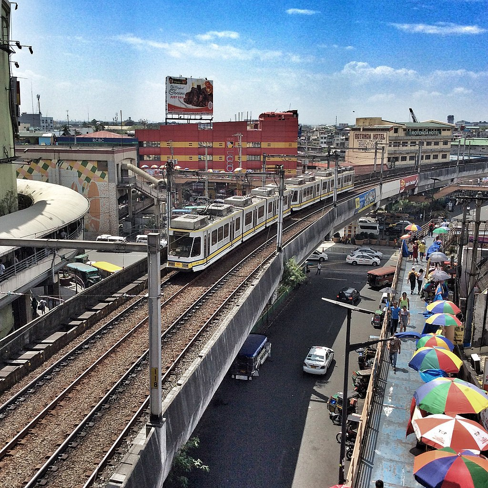
A two-car 1000 class train approaching EDSA station
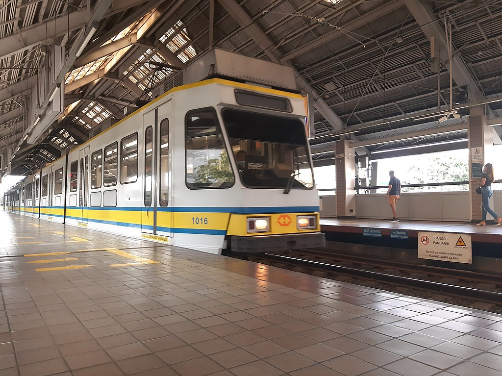
A 1000 class train approaching United Nations station
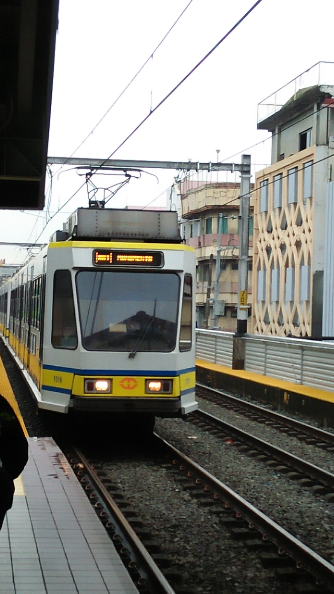
A newly refurbished 1000 class LRV with an LED destination front display
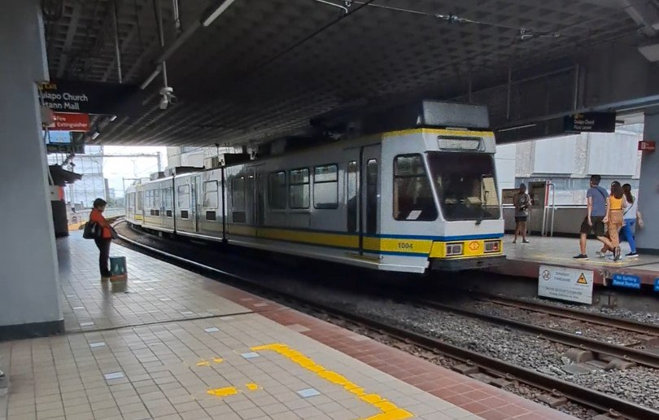
A 1000 class
train at Carriedo station
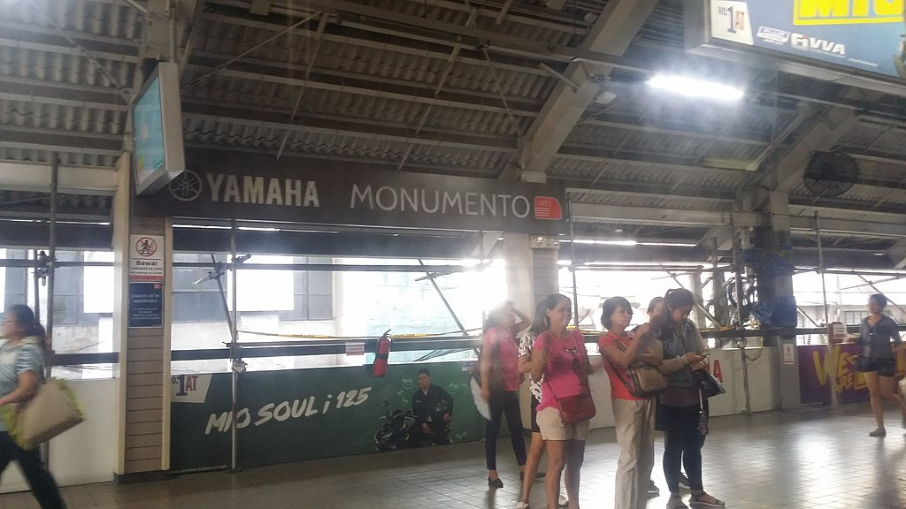
A three-car 1000 class train at Monumento station
Interior
Each LRV has five door swing plug-type doors per side. Each train car has a capacity of 81 seated passengers and 293 standing passengers, carrying a total of 374 passengers. Seats are colored blue and are longitudinal-type.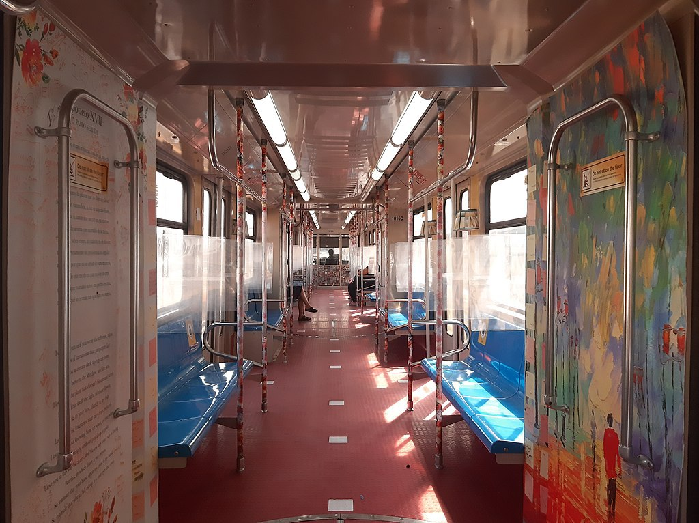
Interior of 1000 class LRV (first refurbishment)
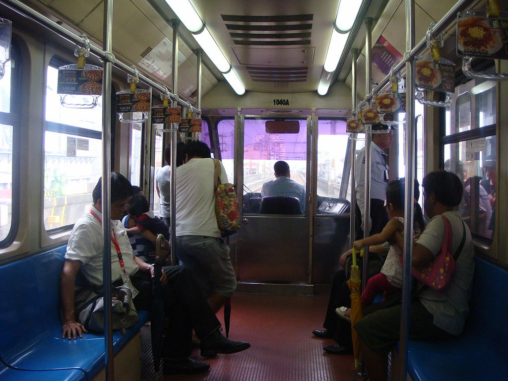
Interior of 1000 class LRV (second refurbishment)
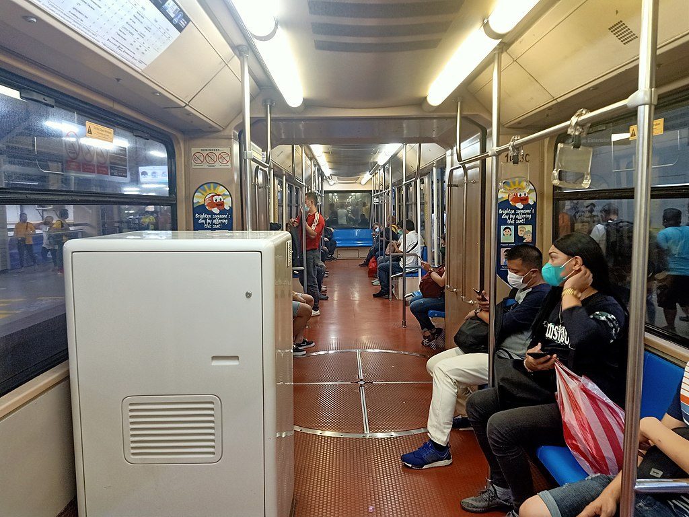
Interior with new Alstom signaling equipment on the left.
Electrical and mechanical
A thyristor chopper traction control system is installed in the trains, powering two direct current (DC) straight-wound traction motors. Ateliers de Constructions Electriques de Charleroi (ACEC) manufactured the electrical and traction equipment for the trains.Each LRV has four inside-frame bogies consisting of two motorized bogies at the ends of the LRV and two trailer bogies under the articulations. The primary suspension is a conical rubber, while the secondary suspension is a coil spring. Semi-permanent couplers are present at the ends of the non-cab section (section B) of the light rail vehicles.
Braking system
Dynamic brakes are used as a service brake. There are two disc brakes per trailer bogies acting as a service brake and two disc brakes per motor bogies used as an emergency and substitution brake. Each bogie has two electromagnetic track brakes for use in case of emergency.The transmission is a bogie-mounted transmission consisting of a right-angle link drive transmitted via gears and two elastic couplings.
Each unidirectional light rail vehicle consists of three articulated cars.
| Car designation | A | B | C | |
|---|---|---|---|---|
| Control cab | Yes | No | No | |
| Motor | Yes | No | Yes | |
| Pantograph | Yes | No | No | |
| Car length | 31.72 m | |||
| Capacity | Seated | 81 | ||
| Standing | 293 | |||
| Total | 374 | |||
Original configurations of two-car trains.
Legend
| Either out of service, scrapped, or decommissioned |
| Set no. | 1 | 2 |
|---|---|---|
| 1 | 1001 | 1002 |
| 2 | 1003 | 1004 |
| 3 | 1005 | 1006 |
| 4 | 1007 | 1008 |
| 5 | 1009 | 1010 |
| 6 | 1011 | 1012 |
| 7 | 1013 | 1014 |
| 8 | 1015 | 1016 |
| 9 | 1017 | 1018 |
| 10 | 1019 | 1020 |
| 11 | 1021 | 1022 |
| 12 | 1023 | 1024 |
| 13 | 1025 | 1026 |
| 14 | 1027 | 1028 |
| 15 | 1029 | 1030 |
| 16 | 1031 | 1032 |
| 17 | 1033 | 1034 |
| 18 | 1035 | 1036 |
| 19 | 1037 | 1038 |
| 20 | 1039 | 1040 |
| 21 | 1041 | 1042 |
| 22 | 1043 | 1044 |
| 23 | 1045 | 1046 |
| 24 | 1047 | 1048 |
| 25 | 1049 | 1050 |
| 26 | 1051 | 1052 |
| 27 | 1053 | 1054 |
| 28 | 1055 | 1056 |
| 29 | 1057 | 1058 |
| 30 | 1059 | 1060 |
| 31 | 1061 | 1062 |
| 32 | 1063 | 1064 |
- On December 30, 2000, Rizal Day, LRV 1037 exploded at Blumentritt station as part of a series of explosions in a terrorist attack known as the Rizal Day bombings. The attack on the line killed some 22 people and injured hundreds. The damaged train was decommissioned immediately after the incident. No confirmed plans were announced on its ultimate fate, whether it would be restored or scrapped. The train, together with other trainsets involved in accidents, have been ultimately sold for scrap.
- On December 8, 2008, a 1000 class train encountered a glitch while approaching Carriedo station.
- On June 24, 2010, two trains (1000 and 1200 class) collided at Balintawak station.
- On February 18, 2011, two trains (1000 and 1200 class) collided at the reversing tracks about a kilometer east of Fernando Poe Jr. station. There were no passengers on board, and no injuries were reported. A formal LRTA investigation concluded that the accident was caused by a combination of an automatic track switch failure and driver negligence. The operator was found to be using a mobile phone while overspeeding at 61 km/h, well above the designated 40 km/h speed limit for the reversing loop zone.
- On March 29, 2011 at around 7:40 AM, a mechanical failure in a brake solenoid valve of a 1000 class train caused thick smoke to rise from a train's wheels as it approached the United Nations station. The smoke triggered a massive passenger panic and near-stampede inside the cabin; several commuters forcefully shattered the train's glass doors and windows to escape, leaving four passengers injured by flying glass shards. The incident caused a 10-minute mainline operational delay.
- On April 15, 2011, a mechanical door failure disrupted morning operations on the entire line. A southbound 1000 class train stalled at Blumentritt station when one of its doors failed to close properly, triggering automatic safety brakes. The incident caused a six-minute service delay during the morning rush hour before technicians manually bypassed the faulty door mechanism to clear the track.
- On June 21, 2011 at 8:00 AM, a 1000 class train suffered a short circuit in one of its electrical components at Libertad station.
- On December 21, 2012 at 10:08 AM, a southbound 1000 class train suffered a sudden mechanical failure and stalled directly at the Monumento station. The breakdown blocked the track layout and briefly paralyzed southbound operations on the mainline. To restore system operations, the LRTA technicians manually bypassed the vehicle's braking system and safely towed the disabled trainset onto a nearby reversing track siding, allowing normal train movement to resume shortly after.
- On May 23, 2015, thousands of passengers were stranded after two trains (1000 and 1200 class) collided near the Monumento station. A train driver was hurt after the impact caused his head to slam into the dashboard of the train. The accident, later revealed to be caused by power fluctuation that affected the signaling system, forced passengers to alight from the station until services was restored around 1:00 PM at the same day.
- On January 13, 2016, during the morning rush hour, a 1000 class train set encountered a technical glitch after its internal air pressure level dropped significantly while operating along the line. Because the 1000 class trains rely on pneumatic air pressure to safely operate their braking systems and automatic doors, the sudden drop forced the train to halt and safely unload its passengers. The mechanical issue caused severe cumulative delays across the entire line, leaving thousands of commuters stranded at various platforms, with passenger queues spilling outside the stations and onto the streets before the faulty train set was towed back to the depot.
- On March 10, 2016, one of the doors of 1000 class train was left open while running between Central Terminal and Pedro Gil stations. The problem was fixed at the Pedro Gil station.
- On March 22, 2016, a 1000 class train stalled between stations during the morning rush hour, leading to power loss, air conditioning failure, and trapped, panic-stricken passengers. Upon reaching Central Terminal station, the doors failed to open, requiring technicians to manually release the pneumatic lines to allow passengers to exit. The investigation concluded that a total loss of propulsion traction paralyzed the auxiliary electrical grid, preventing the door interlock and emergency release mechanisms from functioning.
- On September 26, 2016, a faulty door in a 1000 class train car suddenly slammed shut in less than a second. No one was injured.
- On November 6, 2017, a man's leg got stuck when a train door closed at the Gil Puyat station. The man was dragged at the platform when the train was moving, leaving the man with severe injuries. The man was then sent to a nearby hospital, where he was confined in an intensive care unit. According to a report, a number of trains, particularly the 1000 class trains, do not have sensors, that detects an object between doors.
- On January 5, 2018 at 9:45 AM, a 1000 class train stalled between 5th Avenue and R. Papa stations after a passenger activated the vehicle's onboard emergency system. The passenger forcefully pressed the emergency button and tried to manipulate the door mechanism because his companion was left behind on the platform. The unauthorized activation triggered the train's automatic fail-safe brakes, locking the vehicle on the tracks. Passengers remained stranded inside the dead train for approximately 45 minutes until an oncoming 1200 class train arrived behind them, coupled with the disabled trainset, and pushed it to R. Papa Station to safely evacuate the commuters.
- On February 20, 2018 at around 6:00 AM, a 1000 class train at R. Papa station unloaded 120 passengers after the air pressure gauge inside the train malfunctioned. The operations returned to normal 30 minutes later.
- On September 26, 2018, a viral video confirmed a door malfunction on a 1000 class train at Balintawak Station. Due to a faulty mechanism, the doors failed to open normally, prompting a passenger to force them open to disembark. The doors then abruptly slammed shut on the succeeding passenger, who managed to safely force his way through. The LRMC later reminded commuters that 1000 class trains lack automatic door sensors and warned against forcing the doors open.
- On November 6, 2020, a 1000 class train car emitted smoke at Gil Puyat station at 2:00 PM due to a catenary fault. Passengers were evacuated, and the line implemented a provisional service from Balintawak to Central Terminal and vice versa. The situation normalized at 8:00 PM.
- On April 14, 2023 at 10:17 AM, a speed restriction of 25 km/h was put in place in the line due to the reported fault of the affected 1000 class LRV. At 10:25 AM, the operations stop in whole line due to the fault of affected train at Bambang station northbound and the line implemented a provisional service between Baclaran and Central Terminal at 10:52 AM. Operations normalized between Baclaran and Fernando Poe Jr. at 11:01 AM.
- On August 19, 2023, a 26-year-old passenger jumped onto the tracks at Blumentritt station just as a northbound 1000 class train was approaching. The train operator activated the emergency brake, preventing a catastrophe. Provisional service was implemented between Baclaran and Central stations at 6:12 AM. The passenger was successfully rescued by first responders at 6:33 AM. Despite suffering head injuries and a severed left foot, the passenger is now in stable condition after receiving prompt medical attention. Operations resumed by 6:44 AM.
- On August 23, 2023 at around 8:00 AM, a male passenger's fingers were injured as he held onto the door of a 1000 class train at Monumento station. Another passenger pressed the emergency button, prompting the opening of the door. Platform security personnel promptly assisted the injured passenger, offering to take him to Central Terminal station, but he declined and opted for first-aid treatment at Monumento station for his minor right thumb injury. The post by Mhina C. Fabre went viral on September 4, 2023. According to a report, certain trains, particularly the 1000 class trains, lack sensors to detect objects between doors.